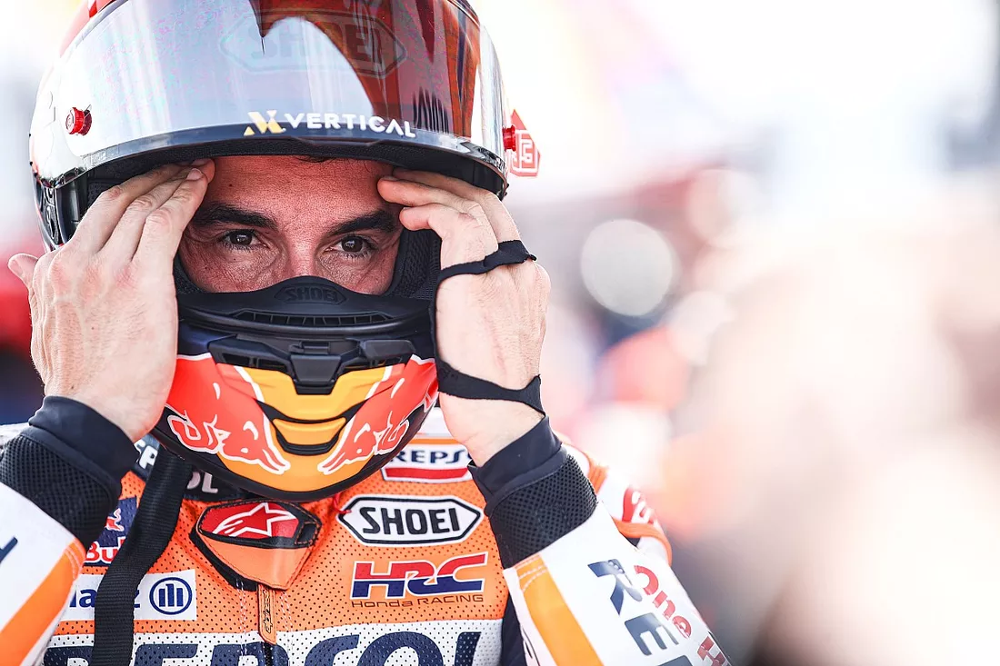
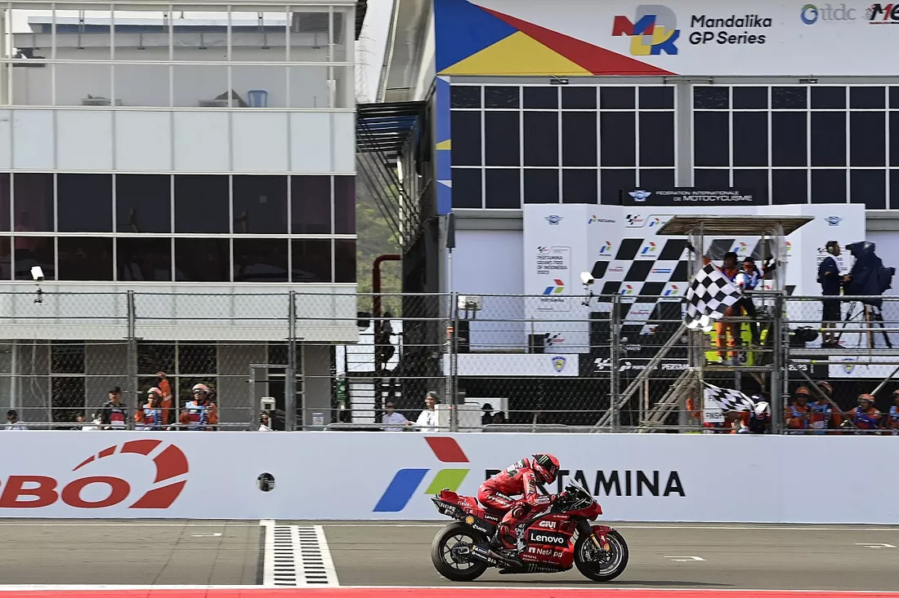

Notícias
Marc Márquez vai se aposentar se ida à Gresini não lhe trouxer felicidade, diz seu irmão Álex.
No final de 2023, o mercado da MotoGP terá uma reviravolta que era vista como impossível no começo do ano, com a saída de Marc Márquez da Honda para correr pela Gresini Ducati. E segundo o irmão de Marc, Álex, que será seu companheiro novamente em 2024, o espanhol deve se aposentar da categoria caso não redescubra a felicidade de correr na equipe italiana.
MotoGP: Após vitória, Bagnaia respira na liderança
A MotoGP teve mais uma etapa para lá de emocionante. Na Indonésia, a liderança do campeonato passou de mãos no sábado e no domingo, retornando ao piloto que chegou a Mandalika na frente: Francesco Bagnaia. Ao ver Jorge Martin cair na prova principal da etapa, o italiano agora tem 18 pontos de vantagem sobre o espanhol.
MotoGP: Martin cai, Bagnaia vence na Indonésia e reassume liderança
.webp)
Uma corrida digna de um campeão. Assim podemos resumir a vitória de Francesco ‘Pecco’ Bagnaia no GP da Indonésia de MotoGP, realizado neste domingo (15), no circuito de Mandalika. O atual campeão da categoria escalou da 13ª colocação para a vitória.